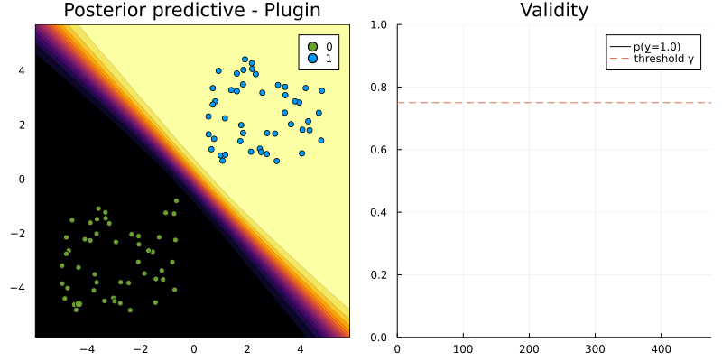
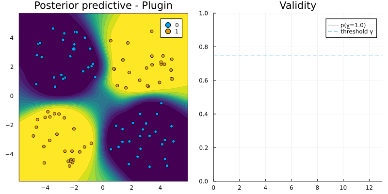

Interoperability
Our work on language interoperability is still in its early stages. At this point only torch models trained in R and Python are supported. It is assumed throughout that all necessary Python and R depencies are installed and working through PyCall.jl and RCall.jl.
The Julia language offers unique support for programming language interoperability. For example, calling Python and R is made remarkably easy through PyCall.jl and RCall.jl. In this tutorial we will see how CounterfactualExplanations.jl leverages this functionality. In particular, we will see that through minimal extra effort the package can be used to explain models that were developed in train in Python or R.
To get started we will first load some two-dimensional toy data:
using Random
# Some random data:
Random.seed!(1234);
N = 100
using CounterfactualExplanations
using CounterfactualExplanations.Data
xs, ys = Data.toy_data_non_linear(N)
X = hcat(xs...)
counterfactual_data = CounterfactualData(X,ys')torch model trained in R
The code below builds a simple MLP in R:
using RCall
R"""
# Data
library(torch)
X <- torch_tensor(t($X))
ys <- torch_tensor($ys)
# Model:
mlp <- nn_module(
initialize = function() {
self$layer1 <- nn_linear(2, 32)
self$layer2 <- nn_linear(32, 1)
},
forward = function(input) {
input <- self$layer1(input)
input <- nnf_sigmoid(input)
input <- self$layer2(input)
input
}
)
model <- mlp()
optimizer <- optim_adam(model$parameters, lr = 0.1)
loss_fun <- nnf_binary_cross_entropy_with_logits
"""The following code trains the MLP for the binary prediction task at hand:
R"""
for (epoch in 1:100) {
model$train()
# Compute prediction and loss:
output <- model(X)[,1]
loss <- loss_fun(output, ys)
# Backpropagation:
optimizer$zero_grad()
loss$backward()
optimizer$step()
cat(sprintf("Loss at epoch %d: %7f\n", epoch, loss$item()))
}
"""To instantiate the model trained in R as model instance to be used with our package, we can simply use RTorchModel constructor as follows:
M = RTorchModel(R"model")# Randomly selected factual:
Random.seed!(123)
x = select_factual(counterfactual_data, rand(1:length(xs)))
y = round(probs(M, x)[1])
target = ifelse(y==1.0,0.0,1.0) # opposite label as target# Define generator:
generator = GenericGenerator()
# Generate recourse:
counterfactual = generate_counterfactual(x, target, counterfactual_data, M, generator)
torch model in Python
We have noted that using both 'PyTorch' through PyCall.jl and 'torch for R' through RCall.jl in the same Julia session causes issues. In particular, loading 'PyTorch' after loading 'torch for R' cause the Julia session to crash and vice versa. For the time being, we therefore advise not to use both RTorchModel() and PyTorchModel in the same session.
We have found that using the Julia Conda package minimizes headaches, just as stated in the package docs. In our own development work we have relied on Conda.add("pytorch") to install PyTorch from the conda-forge channel.
The steps involved are largely analogous to the above, so we leave the following code uncommented.
using PyCall
py"""
# Data
import torch
from torch import nn
"""py"""
X = torch.Tensor($X).T
ys = torch.Tensor($ys)
class MLP(nn.Module):
def __init__(self):
super(MLP, self).__init__()
self.model = nn.Sequential(
nn.Flatten(),
nn.Linear(2, 32),
nn.Sigmoid(),
nn.Linear(32, 1)
)
def forward(self, x):
logits = self.model(x)
return logits
model = MLP()
optimizer = torch.optim.Adam(model.parameters(), lr=0.1)
loss_fun = nn.BCEWithLogitsLoss()
"""py"""
for epoch in range(100):
# Compute prediction and loss:
output = model(X).squeeze()
loss = loss_fun(output, ys)
# Backpropagation:
optimizer.zero_grad()
loss.backward()
optimizer.step()
print(f"Loss at epoch {epoch+1}: {loss.item():>7f}")
"""M = PyTorchModel(py"model")# Randomly selected factual:
Random.seed!(123)
x = select_factual(counterfactual_data, rand(1:length(xs)))
y = round(probs(M, x)[1])
target = ifelse(y==1.0,0.0,1.0) # opposite label as target# Define generator:
generator = GenericGenerator()
# Generate recourse:
counterfactual = generate_counterfactual(x, target, counterfactual_data, M, generator)